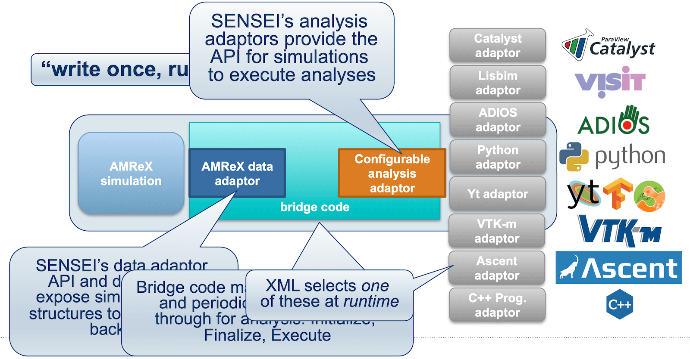

In-situ visualization with ParaView’s Catalyst2
March 24th, 10am-11:30am
Intro
Download a ~137kB ZIP file containing the slides and codes for today’s workshop. We will start our workshop with these slides, and then continue with the hands-on part.
For a more extended slide deck, check out our webinar In-situ visualization with ParaView Catalyst2 from September 2022 – scroll down to this webinar to find the slides + codes + recording.
Installation
On to the hands-on part!
Compile Catalyst2 library
I already did this on the training cluster:
--- user01@cass ---
mkdir -p /project/def-sponsor00/shared && cd /project/def-sponsor00/shared
echo "export CATA=/project/def-sponsor00/shared/insitu" >> ~/.bashrc
source ~/.bashrc
mkdir -p $CATA && cd $CATA
git clone https://gitlab.kitware.com/paraview/catalyst.git catalyst-src
cd catalyst-src
mkdir -p build && cd build
module load cmake/3.31.0
module load gcc/12.3 python/3.12.4 hdf5/1.14.6 netcdf/4.9.3 openvkl/1.3.2
module load scipy-stack/2026a ospray/2.12.0 tbb/2021.10.0
cmake -G Ninja .. -DCMAKE_INSTALL_PREFIX=$CATA/catalyst
ninja # build
ctest # optionally, 100% tests passed, 0 tests failed out of 29
ninja installIf later you plan to run the in-situ examples on the training cluster, you might want to set this:
echo "export CATA=/project/def-sponsor00/shared/insitu" >> ~/.bashrc
source ~/.bashrcCompile ParaView
To run a Catalyst-instrumented simulation code, libcatalyst-paraview.so must be available at runtime. While Catalyst2 documentation suggests that a precompiled ParaView may be used, many users report issues that are resolved only after compiling ParaView from source, likely due to MPI version mismatches.
Here is how I compiled ParaView with Catalyst support in the same /project directory:
--- user01@cass ---
cd $CATA
module load gcc/12.3 python/3.12.4 openvkl/1.3.2 hdf5/1.14.6 netcdf/4.9.3
# module load hdf5-mpi/1.14.6 pnetcdf/1.12.3 # can use these instead if you want
module load scipy-stack/2026a ospray/2.12.0 tbb/2021.10.0 cmake/3.31.0
wget https://www.paraview.org/files/v6.0/ParaView-v6.0.1.tar.xz
unpack and cd there
mkdir -p build && cd build
>>> to support either onscreen or offscreen rendering, must set to ON at least one of:
>>> `VTK_USE_X`, `VTK_USE_COCOA`, `VTK_OPENGL_HAS_OSMESA`, `VTK_OPENGL_HAS_EGL` or `VTK_USE_SDL2`
FLAGS=(
-DCMAKE_INSTALL_PREFIX=$CATA/paraview
-DVTK_OPENGL_HAS_OSMESA=ON
-DPARAVIEW_USE_MPI=ON -DBUILD_TESTING=OFF
-DVTK_USE_X=OFF -DPARAVIEW_USE_QT=OFF
-DPARAVIEW_USE_PYTHON=ON -DPython3_FIND_STRATEGY=LOCATION -DPython3_ROOT_DIR=$EBROOTPYTHON
-DPARAVIEW_BUILD_SHARED_LIBS=ON
-DPARAVIEW_ENABLE_RAYTRACING=ON
-DPARAVIEW_ENABLE_FFMPEG=ON
-DPARAVIEW_ENABLE_CATALYST=ON
-Dcatalyst_DIR=$CATA/catalyst/lib64/cmake/catalyst-2.0
)
cmake .. "${FLAGS[@]}"
export LD_LIBRARY_PATH=$CATA/catalyst/lib64:$LD_LIBRARY_PATH # otherwise undefined references to `catalyst_conduit_node_load`, ...
make -j8
make install
cd $CATA/ParaView-v6.0.1/
shopt -s extglob # enable extended globbing
/bin/rm -rf !("Examples") # keep only Examples
/bin/rm .clang-* .kitware-release.json
shopt -u extglob # disable extended globbingAlternatively, you could compile from the latest source: git clone https://gitlab.kitware.com/paraview/paraview.git ParaView-latest.
Finally, I made these two installations available to all user{01..99} of this research group (def-sponsor00):
chmod og+X,og-r /project/def-sponsor00/shared
chmod -R g+rX $CATARunning the official Examples/Catalyst2 examples
You can find these in the ParaView source:
--- user01@cass ---
cp -r $CATA/ParaView-v6.0.1/Examples .
cd Examples/Catalyst2/CFullExample
module load gcc/12.3 cmake/3.31.0
cmake -Dcatalyst_DIR=$CATA/catalyst/lib64/cmake/catalyst-2.0 .
make
export CATALYST_IMPLEMENTATION_PATHS=$CATA/paraview/lib64/catalyst
export CATALYST_IMPLEMENTATION_NAME=paraview
# --- serial job, just terminal output
# salloc --time=0:30:0 --mem-per-cpu=3600
# ./bin/CFullExampleV2 catalyst_pipeline.py
srun --mem-per-cpu=3600 ./bin/CFullExampleV2 catalyst_pipeline.py
# --- parallel job, just terminal output, each MPI rank prints below, check `bounds`
# salloc --ntasks=2 --time=0:15:0 --mem-per-cpu=3600
# mpirun -np 2 ./bin/CFullExampleV2 catalyst_pipeline.py
srun --ntasks=2 --mem-per-cpu=3600 ./bin/CFullExampleV2 catalyst_pipeline.pyYou should see something line this for the serial run:
executing catalyst_pipeline
(3.538s) [pvbatch] v2_internals.py:212 WARN| Module 'catalyst_pipeline'
missing Catalyst 'options', will use a default options object
-----------------------------------
executing (cycle=0, time=0.0)
bounds: (0.0, 69.0, 0.0, 64.9, 0.0, 55.9)
velocity-magnitude-range: (0.0, 0.0)
pressure-range: (0.0, 0.0)
-----------------------------------
executing (cycle=1, time=0.1)
bounds: (0.0, 69.0, 0.0, 64.9, 0.0, 55.9)
velocity-magnitude-range: (0.0, 6.490000000000001)
pressure-range: (0.05000000074505806, 0.05000000074505806)At the moment, running the code does not produce any data files or images. Instead, we want it to generate a representative dataset that can be used to develop a Catalyst visualization script, which can later be passed to the simulation code for live visualization.
Where can we get this representative dataset? There are three ways:
- slow and manual process: create a representative dataset in the GUI via a combination of Sources and Filters – it must be of the same type produced by the code – e.g. vtkUnstructuredGrid, vtkImageData – and have the same variables that the simulation adaptor code will provide to Catalyst during simulation runs
- modify
CatalystAdaptor.hwith some generic output code - probably the easiest approach: use a generic
gridwriter.py
Here we focus on the last two methods.
2 – creating a representative dataset with CatalystAdaptor.h
A relevant helper code can be found in the C++ Image Data example. Let’s compile and run this example:
--- user01@cass ---
cd ~/Examples/Catalyst2/CxxImageDataExample
module load gcc/12.3 cmake/3.31.0
cmake -Dcatalyst_DIR=$CATA/catalyst/lib64/cmake/catalyst-2.0 .
>>> edit FEDriver.cxx
adjust `unsigned int numberOfTimeSteps = 10;`
add `std::cout << "Current timeStep: " << timeStep << std::endl;` inside the loop
make
export CATALYST_IMPLEMENTATION_PATHS=$CATA/paraview/lib64/catalyst
export CATALYST_IMPLEMENTATION_NAME=paraview
# --- no file output
# salloc --time=0:30:0 --mem-per-cpu=3600
# ./bin/CxxImageDataExampleV2 catalyst_pipeline.py
srun --mem-per-cpu=3600 ./bin/CxxImageDataExampleV2 catalyst_pipeline.pyIf you want file output, it’ll be written by the following code inside the function Initialize(...) inside CatalystAdaptor.h:
conduit_cpp::Node node;
for (int cc = 1; cc < argc; ++cc)
{
if (strcmp(argv[cc], "--output") == 0 && (cc + 1) < argc)
{
node["catalyst/pipelines/0/type"].set("io");
node["catalyst/pipelines/0/filename"].set(argv[cc + 1]);
node["catalyst/pipelines/0/channel"].set("grid");
++cc;
}
}Continue working inside the Slurm job:
# --- write 10 steps as vtkPartitionedDataset (*.vtpd)
srun --mem-per-cpu=3600 ./bin/CxxImageDataExampleV2 --output dataset-%04ts.vtpd
# --- write just the latest timestep
# srun --mem-per-cpu=3600 ./bin/CxxImageDataExampleV2 --output dataset.vtpdNow you should see 10 VTK files dataset-000{0..9}.vtpd and 10 subdirectories dataset-000{0..9}.
3 – creating a representative dataset with gridwriter.py
cp ../SampleScripts/gridwriter.py .
>>> edit gridwriter.py
catalystChannel = "grid"
frequency = 5 # can also set this
srun --mem-per-cpu=3600 ./bin/CxxImageDataExampleV2 gridwriter.pyNow you should see datasets/ subdirectory with 2 timesteps.
Representative dataset → in-situ script
Download datasets/grid_000005* to your local machine and load it into ParaView:
--- cass ---
archive datasets # tar cvfz datasets.tar.gz datasets/*--- laptop ---
cd ~/catalyst
scp cass:Examples/Catalyst2/CxxImageDataExample/datasets.tar.gz .
unpack it here- apply Filters | Contour, generate 5 surfaces of mag(velocity) on a linear scale
- apply Extractors | Image | PNG, set resolution to 1080p
- File | SaveCatalystState… - save it as
extract-contour.py
Edit extract-contour.py:
< grid = XMLPartitionedDatasetReader(registrationName='grid', FileName=['/Users/razoumov/catalyst/datasets/grid_000005.vtpd'])
---
> grid = XMLPartitionedDatasetReader(registrationName='grid')In-situ script → in-situ visualization
Upload extract-contour.py to the cluster:
--- laptop ---
scp extract-contour.py cass:Examples/Catalyst2/CxxImageDataExample/Inside CatalystAdaptor.h we have:
// We only have 1 channel here. Let's name it 'grid'.
auto channel = exec_params["catalyst/channels/grid"];i.e. the channels in the simulation code and in the Catalyst script extract-contour.py (`registrationName=‘grid’) have matching names, so the simulation data will be found by the Catalyst script.
--- cass ---
srun --mem-per-cpu=3600 ./bin/CxxImageDataExampleV2 extract-contour.pyIn your simulation directory, you will find datasets/RenderView1_00000* which you can now download to your laptop:
--- laptop ---
scp cass:Examples/Catalyst2/CxxImageDataExample/datasets/RenderView1_00000* .Adapting and running a custom C code
Let’s now go to our custom example with a more interesting dataset. In the code we will expose our data arrays to the Catalyst2 library – let’s see how this is done!
--- cass ---
wget https://nextcloud.computecanada.ca/index.php/s/j4d4YHqFar9KRFF/download -O catalyst.zip
unpack this file
cd standalone-mpi/imageData
>>> modify FEDriver.c to run only one timestep
make
export CATALYST_IMPLEMENTATION_PATHS=$CATA/paraview/lib64/catalyst
export CATALYST_IMPLEMENTATION_NAME=paraview
srun --mem-per-cpu=3600 ./bin/CImageDataExampleV2 --output output-%04ts.vtpd # one file per timestep
# srun --ntasks=2 --mem-per-cpu=3600 ./bin/CImageDataExampleV2 --output output-%04ts.vtpd # decomposed domain
tar cvfz 111.tgz output*--- laptop ---
scp cass:standalone-mpi/imageData/111.tgz .Unpack and load the file into ParaView. Then
- apple Contour at \(\rho=0.3\), or perhaps Threshold keeping \(\rho\in[0.3, 0.6]\)
- apply Extractors | Image | PNG
- File | Save Catalyst State… - save it as
extract-threshold.py
Edit extract-threshold.py - remove FileName, leave just registrationName
--- laptop ---
scp extract-threshold.py cass:standalone-mpi/imageData--- cass ---
>>> edit FEDriver.c
unsigned int numberOfTimeSteps = 10;
make
srun --mem-per-cpu=3600 ./bin/CImageDataExampleV2 extract-threshold.py
tar cvfz 111.tgz datasets/RenderView1_00000*--- laptop ---
scp cass:standalone-mpi/imageData/111.tgz .
unpack it
open datasets/RenderView1_00000*In-situ script → smaller in-situ data
How can we extract data from the simulation at runtime, rather than generating images? What kind of data would you extract from the data provider in our C code?
Summary
- Steep learning curve … however, once implemented in a simulation code, you do not even need to recompile the code to switch to a new pipeline
- Catalyst Python pipelines can be created interactively in the GUI
- Catalyst can produce both images and derived (\(\Rightarrow\) smaller) data
- writes partitioned data, one file / MPI rank
- Can be used from a variety of languages: C, C++, Fortran, Python, Julia
- Catalyst has been shown to scale to millions of CPU cores
- Design philosophy: use Conduit nodes to pass pointers to existing arrays in memory
- arrays will not be duplicated
- you need to describe the mesh type / coordinates / topology
- do not need to know the underlying VTK data model
- internally, supports all VTK data types: ImageData, StructuredGrid, UnstructuredGrid, …
- Make sure to use latest Catalyst2 (a significant rewrite of the original library)
Next step
The universal in-situ interface provided by SENSEI (Scalable Environment for Novel Exploration of Impactful Simulations) enables simulation data producers to communicate with generic in-situ analysis and visualization endpoints through a unified API. This approach allows multiple endpoints (and of multiple types – not just Catalyst2) to be combined within a single simulation, offering flexibility in how data is processed and analyzed at runtime.
